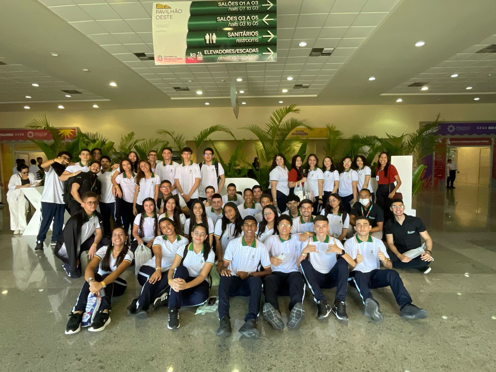
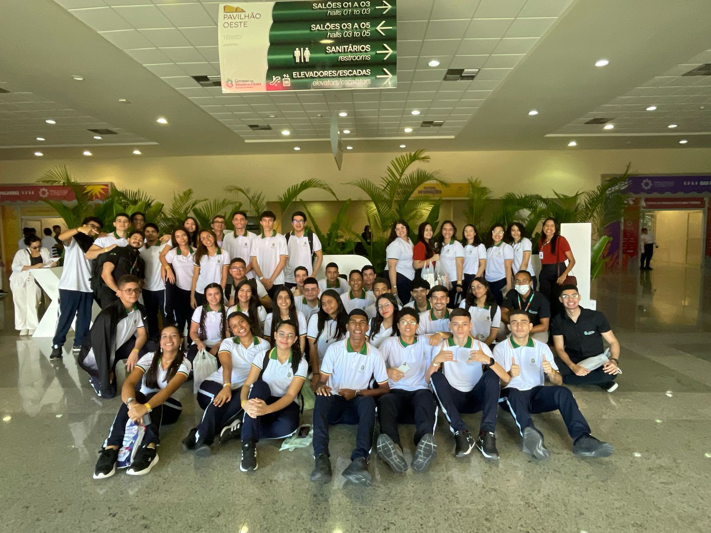

Bem-vindo ao Eixo de Tecnologia AFS, o espaço onde inovação, criatividade e conhecimento digital se encontram para transformar o futuro! Aqui, preparamos os alunos para atuar nas áreas mais promissoras do mercado, desenvolvendo habilidades técnicas, pensamento lógico e espírito de equipe.
Explore nossos cursos:
 

Você é curioso, gosta de mexer com computadores e quer entender o que está por trás da tecnologia que usamos todos os dias? O curso de Informática é ideal para quem quer se aprofundar no universo da computação, com uma formação prática e versátil.
Quer criar sites, aplicativos e softwares que impactam o dia a dia das pessoas? O curso de Desenvolvimento de Sistemas é voltado para quem ama programação e quer dominar as linguagens que constroem o mundo digital.
Especializando em EAD em Tecnologias Educacionais (IFCE), Pós-graduado em Arquitetura de Software (FACMINAS), Pós-graduado em Redes de Computadores (ESAB), Graduado em Sistemas para Internet (Faculdade Evolução).
Licenciatura em Computação- Pós-graduação em redes de computadores & Gestão da Educação Profissional e Tecnológica.
graduação em Análise e Desenvolvimento de Sistemas pela Faculdade Estácio do Ceará (2021). Atualmente é professor orentador de estágio do Instituto Centro de Ensino Tecnológico (CENTEC). Tem experiência na área de Ciência da Computação, com ênfase no ensino das disciplinas técnicas ligadas a área.